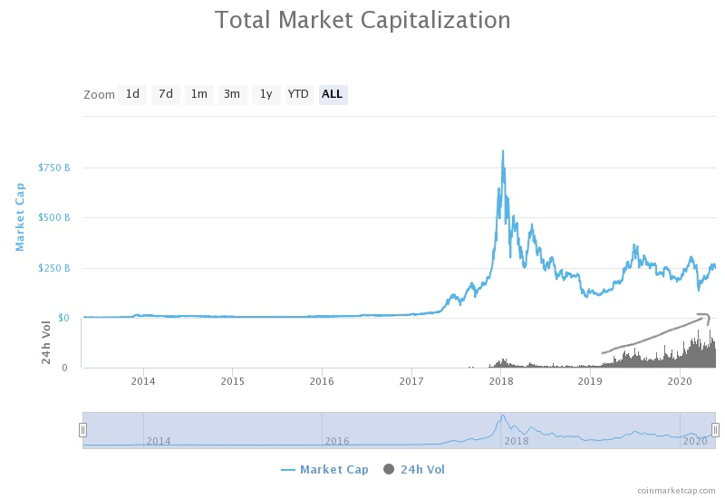
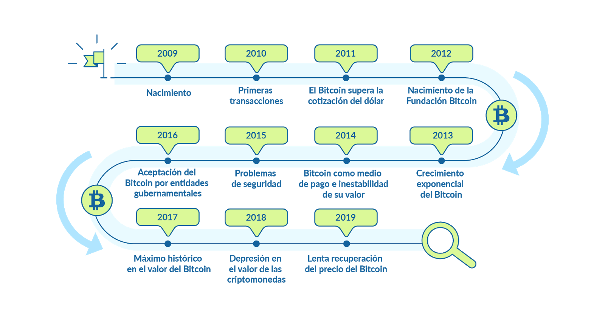
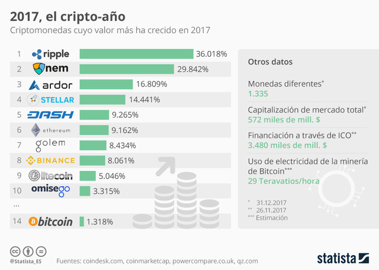
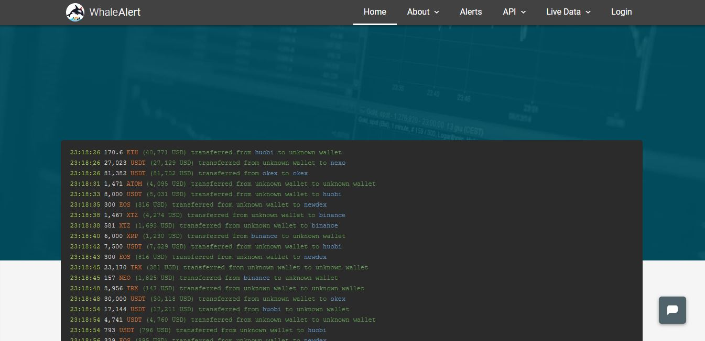
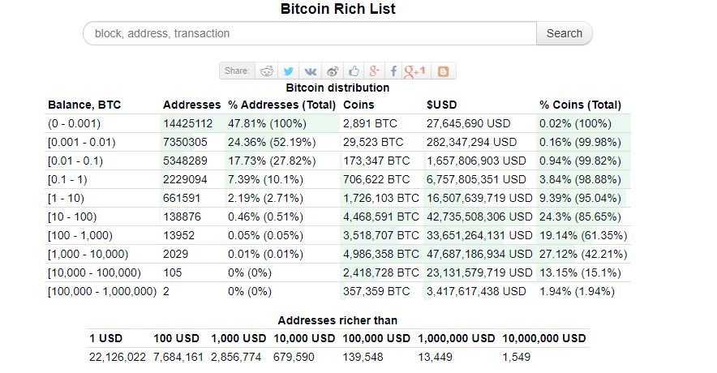
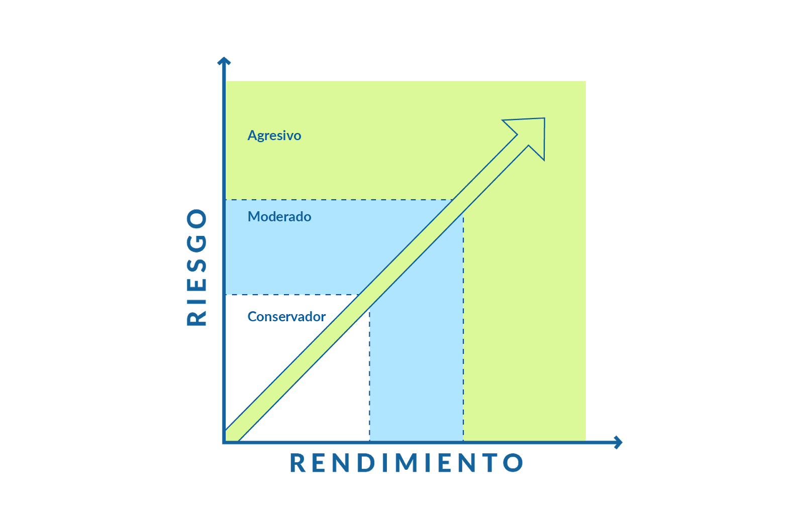
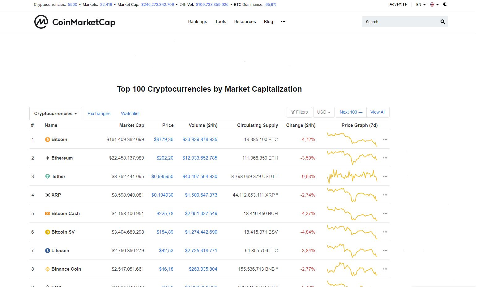
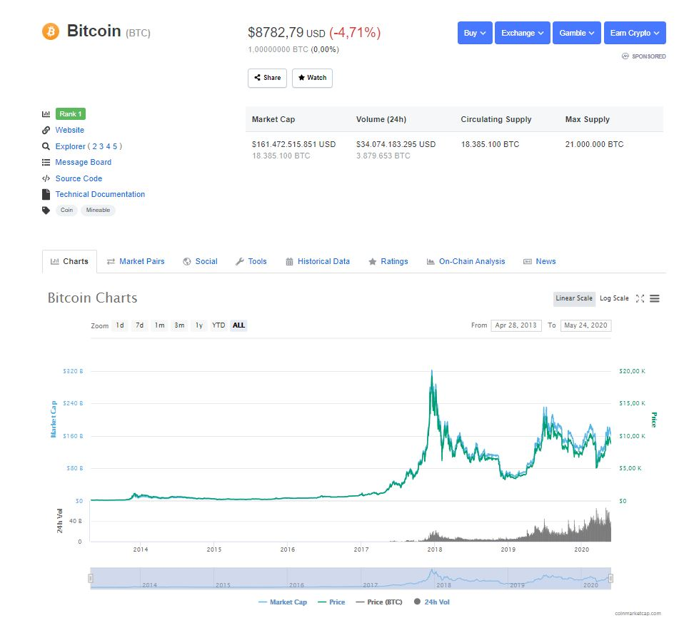
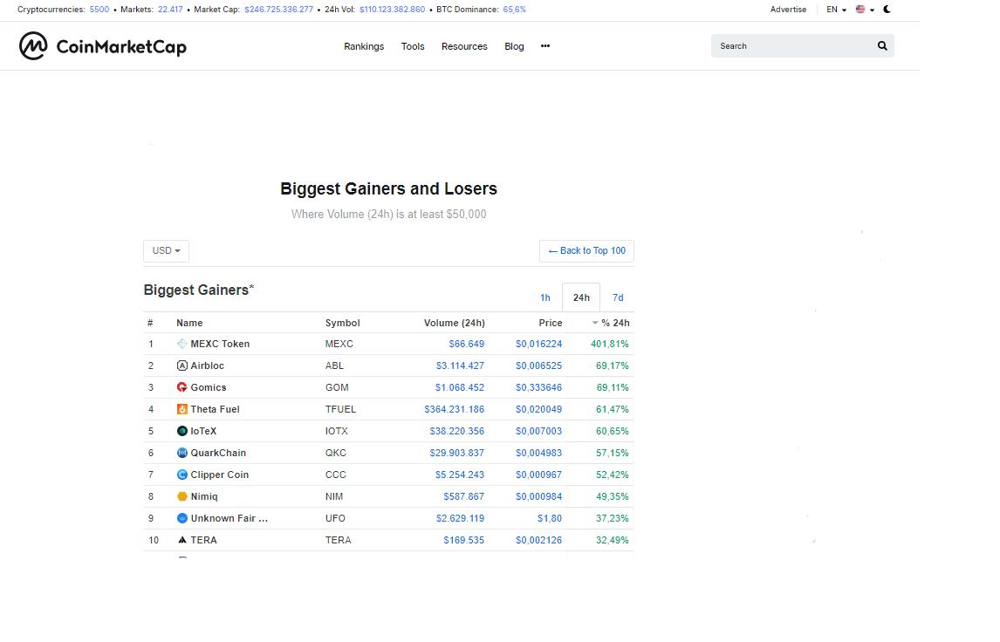
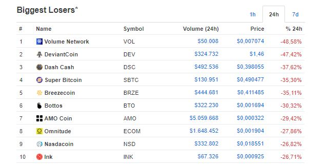

Activos financieros¶
¿Es Bitcoin un activo financiero?¶
Un activo financiero es un bien o propiedad legal que otorga beneficios o ganancias futuras a quien lo adquiere y pueden ser emitidas por cualquier empresa, o ente gubernamental.
Además de ello, debe cumplir con ciertas características:
- Debe ser rentable en el tiempo, es decir generar beneficios sobre la toma de decisiones por adquirir el activo.
- La posibilidad de incurrir en pérdidas sobre el capital de inversión. Mientras mayor sea el riesgo, también será la mayor la rentabilidad.
- Capacidad para convertir el activo financiero en moneda local sin sufrir pérdidas en la transacción realizada.
Si bien Bitcoin cumple con algunas de estas características, no es considerado un activo financiero legal debido a su protocolo inicial. Es decir, no posee un organismo de control similar a un Banco Central o marco jurídico que lo respalde, es por ello que tampoco se considera un activo financiero autorizado para cotizar en las bolsas de valores.
¿Por qué Bitcoin no cumple con la definición de Activo Financiero?¶
- No es una moneda en curso legal en el mundo, aunque su adopción aumenta cada vez más.
- No es equivalente a dinero local, pues este cambio se enfrenta constantemente a las fluctuaciones constantes de su valor en el mercado.
- Aún no es un medio de pago tradicional en el mundo, o con una aceptación regida por marcos legales.
Sin embargo, esta criptomoneda ha soportado varias crisis de liquidez y jurídicas en los mercados financieros, sorprendiendo así a la economía mundial gracias a su rápido crecimiento y valorización.
2020 en particular, quedará en la historia como el año en que los mercados financieros sufrieron su peor caída desde los años 90 y por primera vez en el mundo el petróleo tuvo precios negativos.
En momentos de tanta incertidumbre sobre el panorama económico mundial, Bitcoin ha demostrado ser el activo con mayor firmeza respecto a la situación actual, actuando incluso como refugio económico además del oro.
A pesar de los cambios abruptos en la cotización de los precios, el volumen diario de negociación ha ido aumentando en el tiempo, mostrando por tanto el interés de los inversionistas en los cripto activos.

Fuente: Coinmarketcap Total Market Capitalization
Si bien, el futuro de las criptomonedas es incierto las transacciones cobran cada día más relevancia, la adopción del cripto ecosistema va en incremento, y los gobiernos comienzan a notar, regular, y aceptarlo como medio de pago siendo el caso de Japón, Suiza, Venezuela, etc.
El nuevo mundo digital se presenta como un gran escenario para las criptomonedas. Llegando a ser una gran alternativa para complementar los sistemas de pago tradicionales y que en un futuro cercano pueda llegar a ser parte de la cotidianidad de las próximas generaciones. Las criptomonedas definitivamente llegaron para quedarse.¶
Evolución del Precio de Bitcoin y Criptomonedas¶
Cronología del Bitcoin¶
Veamos cómo ha sido su evolución desde su creación, resaltando los eventos más importantes. 
2009: Nacimiento¶
Nace Bitcoin, y se genera el "Bloque Génesis" o primer bloque de minado por 50 BTC. Durante ese año se registran las primeras transacciones a nivel global.
2010: Primeras transacciones¶
El 22 de mayo de 2010 Laszlo Hanyecz pagó 10.000 BTC por un par de pizzas, siendo una de las primeras transacciones en utilizar el cripto activo como método de pago. Además superó por primera vez los 10 centavos de USD.
2011: El Bitcoin supera la cotización del dólar¶
Bitcoin logra lo imposible y alcanza 1 USD de cotización, dando inicio a un gran interés por las criptomonedas y al alto nivel de volatilidad en la fluctuación del precio del activo, superando los 20 USD a mediados de año, pero debido a preocupaciones sobre la falta de marcos legales sobre este nuevo sistema monetario y la no consolidación de un mecanismo de comercio su cotización cae a valores mínimos regresando nuevamente a 2 USD.
2012: Nacimiento de la Fundación Bitcoin¶
Nació la Fundación Bitcoin, una organización sin fines de lucro, para promover el crecimiento de esta moneda digital. Su misión era estandarizar, proteger y promover el protocolo de código abierto. Su cotización creció lentamente durante ese año. Además, BitPay anuncia que más de 1.000 plataformas aceptan Bitcoin como método de pago.
2013: Crecimiento exponencial del Bitcoin¶
Coinbase anuncia un incremento considerable del volumen de transacción en su plataforma durante el primer trimestre del año, y entidades financieras comienzan a prestar su atención a la criptomoneda. Crece de forma exponencial durante un año, iniciando en 20 USD promedio de cotización y alcanzando los casi 1.000 USD antes de finalizar el 2013.
Para este momento, Bitcoin ya contaba con una gran comunidad que lo respaldaba como proyecto y tecnología.
2014: Bitcoin como medio de pago e inestabilidad de su valor¶
Este año Bitcoin comienza a ser aceptado como medio de pago y como activo de inversión. Empresas como Microsoft comienzan a aceptarlo como método de pago. El gran impacto en la volatilidad de los precios comienza a hacerse más notable iniciando el año en un precio cercano a los 1.000 USD y culminando debajo de los 400 USD.
2015: Problemas de seguridad relacionados con Bitcoin¶
Ese año se informa de varios ataques cibernéticos y el robo de Bitcoin de varias compañías de pagos. Se procede al cambio en los sistemas informáticos para dotar de mayor seguridad a la red de comercio. Afectando en efecto al precio, pues fue un año de crecimiento lento con caídas a principios de año y aumento progresivo hasta alcanzar nuevamente los 500 USD para final de año.
2016: Aceptación del Bitcoin por entidades gubernamentales¶
Japón decide legalizar Bitcoin como medio de pago, ningún gobierno había hecho hasta el momento y durante ese año comenzaron a existir a nivel mundial cerca de 500 cajeros automáticos de Bitcoin. Su cotización se mantiene en crecimiento lento pero constante iniciando el año en cerca de 400 USD y finalizando sobre los 900 USD.
2017 El máximo histórico en el valor del Bitcoin¶
Este es quizá uno de los años más importantes para el bitcoin y las criptomonedas, comenzó a crecer rápidamente y su evolución dejó atónitos a todos los inversores además de atraer la atención de millones de personas en el mundo.
El gobierno de Rusia anuncia la legalización y adopción del cripto activo, y tras varios eventos políticos económicos durante el primer trimestre del año (Brexit, Trump como presidente de USA, etc.) Bitcoin ya había superado el máximo histórico de 1.000 USD y comienza el camino de crecimiento impensable, iniciando por romper la barrera de los 2.000 USD a mediados del mayo superando al oro en su cotización.
El FOMO Se intensifica y Bitcoin registra los 19.900 USD antes de culminar el año registrándose como el máximo histórico de las criptomonedas, mostrando al mundo su potencial de crecimiento.

Ballenas vs. Retail¶
Las criptomonedas se han convertido en uno de los instrumentos financieros más importantes de la última década debido a su increíble volatilidad y fluctuación en los precios, llamando la atención de inversionistas tanto novatos como profesionales.
Si bien el acceso al ecosistema de los cripto activos es fácil, muy pocas logran alcanzar el éxito como inversionistas o especuladores. En especial en un mercado con tan poco tiempo, recorrido e historia de precios; elevando la dificultad para alcanzar la consistencia o rentabilidad.
¿Qué son Ballenas y Traders Retail?¶
Las ballenas son inversionistas con alto poder adquisitivo y amplio recorrido en el mundo de las inversiones, conociendo por tanto los patrones de funcionamiento de los activos financieros, y elevando así las probabilidades de éxito en sus transacciones.
Debido al gran volumen de negociación, las ballenas pueden afectar en gran medida el comportamiento del precio de un cripto activo. En los mercados financieros tradicionales al ser centralizados no hay acceso para que todas las personas puedan divisar las transacciones realizadas. Sin embargo, en el ecosistema de las criptomonedas existen herramientas que nos permiten ver los movimientos de las ballenas, ayudándonos a entender cuáles son sus intereses en un cripto activo en particular y así accionar en mayor probabilidad a favor del movimiento del precio.
Los retail traders, en cambio, son inversionistas individuales o minoristas y buscan generar rentabilidad a partir de sus movimientos en el cripto mercado. En conjunto su volumen de negociación es muy bajo y suelen tener una mentalidad de inversión de corto plazo lo que los lleva a tener una baja diversificación y gran aversión al riesgo por lo tanto muy pocos logran alcanzar el éxito en el mundo de las inversiones.
Una herramienta que nos ayudará a entender y tener un primer acercamiento con las transacciones es WhaleAlert, detallando cada una de las transacciones para identificar en qué cripto activo están interesados, qué cantidad de dinero están invirtiendo y en qué dirección se están moviendo.

Fuente: WhaleAlert
BitInfoCharts¶
Esta herramienta nos permite visualizar la distribución de riquezas en Bitcoin, y podemos ver como de los 18 millones de bitcoins minados hasta el momento menos de 200 mil direcciones de bitcoin en el mundo cuentan con más del 80% de la totalidad del activo financiero.

Fuente: BitInfoCharts Bitcoin Rich List
Resumen
Si bien alcanzar la rentabilidad en el ecosistema de las criptomonedas no es tarea sencilla, tampoco es imposible. Es muy importante entender que, aunque no seamos ballenas nada nos detiene a pensar y actuar como ellas, siguiendo el camino correcto de aprendizaje y realizando las prácticas adecuadas que nos permitan avanzar en el tiempo, y generar rentabilidades a partir de ello.
Tipos de Inversores¶
Un inversionista especula a partir de la fluctuación de los precios de un activo financiero de forma profesional. Esto quiere decir que requiere mucha disciplina y conocimiento para llevar a cabo esta actividad además de una estrategia o metodología definida.
Existen diferentes tipos de inversores, y esto dependerá de los objetivos e intereses de cada persona.
Tipos de Inversores¶
Inversor Intradía¶
Su objetivo es aprovechar micro movimientos del precio en temporalidades bajas, de esa forma puede abrir varias y cerrar operaciones en un mismo día, buscando beneficios pequeños que sumen al final de la jornada.
Los inversores que operan bajo esta técnica suelen enfocarse en la acción del precio por encima del potencial del cripto activo en el largo plazo. Además, los inversionistas profesionales, cuentan con sistemas automatizados que les permiten gestionar su portafolios y optimizar sus procesos.
Inversor Swing¶
Su objetivo es aprovechar los movimientos tendenciales en temporalidades medias, y sostener operaciones durante días e incluso semanas, buscando beneficios considerables, pero en menor medida pues su enfoque no es visualizar el mercado en todo momento sino aprovechar los grandes movimientos. Una buena diversificación y gestión de riesgo es prioridad para un inversor de este perfil, además de enfocarse en el potencial de mediano plazo del cripto activo.
Inversor de Largo Plazo¶
Un inversor de largo plazo, estudia el potencial del activo financiero en el tiempo. Su enfoque no se encuentra en puntos medios del precio sino en que pueda perdurar y generar beneficios pasados los meses e incluso años además de diversificar su portafolio e ir agregando activos que incrementen el valor de su capital.
¿Cuál perfil elegir?¶
El objetivo principal de cualquier inversor es generar beneficios, comprando y vendiendo cripto activos o viceversa.
El principal problema radica en que la mayoría de las personas están enfocadas en encontrar beneficios en el corto plazo, y esto no está directamente relacionado con el tipo de inversor sino con la mentalidad errónea. Pero el mercado siempre está ahí para recordarte que esto no es un juego, es una profesión en la que debemos contar con un plan, metas, y estrategia. Así que ¿cuál perfil debo elegir?
Elige un perfil que se adapte a tu personalidad, así como tus objetivos e intereses con el cripto mercado, sin embargo, cada uno de ellos requiere una enorme cantidad de tiempo, estudio, herramientas, disciplina, enfoque y estrategia que nos permita ser consistentes.
Portafolios de Inversión¶
Dependiendo de la aversión al riesgo que puedan tomar los inversores, podemos distinguir entre varios tipos de portafolios de inversión, pues debido a la volatilidad del Bitcoin y las Altcoins es muy importante distribuir bien nuestro dinero. Además, debemos tener en cuenta que lo único que podemos controlar en las inversiones son las pérdidas, nadie sabe con certeza cuál será el beneficio total al ingresar a una transacción, son sólo probabilidades al margen. 
Portafolio de Inversión Conservador¶
Un portafolio de inversión conservador minimiza al máximo las posibles pérdidas, a cambio de obtener beneficios consistentes en el tiempo y en el peor de los casos la pérdida total no suponga un gran daño al capital inicial.
La diversificación en este tipo de portafolios es clave, pero también los cripto activos, por lo que las mejores opciones siempre serán cripto activos sólidos y con trayectoria en el tiempo además de un nivel de volatilidad normal respecto al ecosistema, que no suponga cada transacción más de 1% de riesgo sobre capital total y de una posible proyección de beneficio que supere al menos tres veces el riesgo.
Estas pueden adaptarse a cualquier tipo de inversor, y es el perfil de portafolio de riesgo más recomendado. Al ser el trading una profesión se buscan resultados consistentes en el tiempo y una buena gestión de riesgo siempre elevará las probabilidades para alcanzarlo.
Portafolio de Inversión Moderado¶
En un portafolio de inversión moderado dentro de un marco lógico el objetivo es alcanzar una rentabilidad atractiva asociada a un riesgo moderado. Es decir, la aversión al riesgo aumenta por transacción sin embargo la relación beneficio riesgo debe mantenerse o superar al perfil de riesgo conservador.
En este tipo de portafolios podemos empezar a distribuir nuestro capital para comenzar a incluir cripto activos con mayor nivel de volatilidad, sin olvidar que la gestión de riesgo siempre debe ser protagonista en cada una de nuestras transacciones adaptándose al tipo de perfil inversor que queramos desempeñar.
De igual forma, un portafolio de inversión moderado no debe bajo ninguna circunstancia ser llevado por un inversor novato.
Portafolio de Inversión Agresivo¶
Inversores experimentados, con gran recorrido y conocimientos crean este tipo de portafolios. En la mayoría de los casos con herramientas automatizadas que les permiten controlar a detalle la aversión al riesgo y también el sesgo emocional. Además de ello una diversificación amplia, así como cripto activos con mayor nivel de volatilidad. Normalmente son portafolios con un perfil de inversor de intradía o corto plazo pues el nivel de riesgo es bastante amplio respecto al capital inicial y el objetivo principal es aprovechar la mayor cantidad de movimientos en el mercado para generar en mayor probabilidad más beneficios a partir de ello.
Resumen
Las posibilidades en el mundo de las inversiones son enormes, sin embargo, los inversores con mayor tiempo y trayectoria siempre seguirán un perfil de riesgo y portafolio conservador.
Recuerda que tus proyecciones sin importar tu perfil deben ser siempre a largo plazo, en una profesión de tantos caminos siempre debemos pensar de forma objetiva y sistemática para que nuestro capital pueda perdurar en el tiempo y ser consistente de igual forma.
¿Qué es CoinMarketCap?¶
CoinMarketCap es una de las herramientas más importantes para los cripto inversores, pues en ella encontramos toda la información básica y relevante del mercado. Desde capitalización, precio actual de todas las criptomonedas, volumen, gráficos, histórico de precio, ranking de todas las criptomonedas existentes, y más.
Ranking de criptomonedas¶
Algunas de las características que encontramos al ingresar a la plataforma son:
- Market Cap (Capitalización de Mercado): Es decir la cantidad total de dólares americanos o capitalización que tiene bitcoin y cada una de las criptomonedas.
- Price (Precio): La cotización actual en dólares americanos de cada criptomoneda, promediando el precio de todas las plataformas de inversión.
- Volume (Volumen): La cantidad de dinero que ha tenido movimiento en las últimas 24 horas en dólares americanos de cada una de las criptomonedas.
- Circulating Supply (Cantidad en Circulación): El número de monedas que se encuentran en circulación hasta el momento, es decir de los 21 millones de BTC que van a existir hoy sólo se han minado 18 millones BTC en promedio.
- Change 24h (Cambio del precio): El resultado de la última fluctuación del precio en las últimas 24 horas en términos porcentuales. Es decir, podemos ver si el precio de la criptomoneda en particular ha aumentado su cotización respecto al día anterior o viceversa.
- Price Graph 7D (Gráfico del Precio): Un gráfico general del precio en la última semana, sin ahondar en muchos detalles.

Fuente: Top 100 Cryptocurrencies Coinmarketcap
Información Relevante de Cada Criptomoneda¶
Desde la interfaz principal de CoinMarketCap podemos ir al panel individual de cada una de las criptomonedas para ver más detalles e información.
Tendremos acceso al sitio web de cada criptomoneda con toda la información técnica y relevante. Es muy importante siempre validar esta información cuando nos encontremos buscando cripto activos para agregar a nuestros portafolios de largo plazo. Además del explorador de bloques o transacciones, foros, acceso al código fuente y toda la documentación técnica (White paper) con todos los detalles del proyecto y su protocolo de creación.
Tenemos acceso también, a divisar nuevamente la capitalización total, cambios de precio, volumen, cantidad en circulación y el límite de emisión de cada criptomoneda. De igual forma, al histórico de precios en la parte inferior, redes sociales, herramientas, noticias, e incluso en qué plataformas de inversión podemos comerciar y adquirir la criptomoneda en particular.
Por lo tanto, en un solo lugar encontramos toda la información relevante necesaria que nos ayudará a complementar nuestra decisión de sumar o no un cripto activo a nuestros portafolios de inversión según sea el caso.

Fuente: Bitcoin Coinmarketcap
Criptomonedas con Mayor Movimiento¶
Otra de las herramientas más importantes dentro de CoinMarketCap para los inversionistas es poder divisar las criptomonedas con mayor movimiento en las últimas 24 horas e incluso en la última semana. Para inversionistas de corto mediano plazo, esta herramienta es de absoluta relevancia porque pueden entender qué criptomonedas cuentan con el volumen y potencial suficiente para realizar fluctuaciones de alto impacto en el mercado.
Cabe destacar que no es una herramienta absoluta, y tampoco existe una herramienta absoluta en el mundo de las inversiones. La consistencia se alcanza a partir de un conjunto de herramientas y fundamentos basados en probabilidades con resultados en el tiempo.


Fuente: CoinMarketCap Gainers – Losers
Resumen
CoinMarketCap es una de las herramientas más completas para inversores de criptomonedas, y será un complemento ideal para poder estudiar a detalle cada cripto activo. Si bien no es una herramienta absoluta y su uso exclusivo no nos indica oportunidades de inversión, sí que es una gran fuente de información para entender los fundamentos del ecosistema cripto.
Si tu interés es convertirte en un inversor de criptomonedas, recuerda que en Platzi tenemos el Curso de Introducción al Trading de Criptomonedas y allí podrás entender todo el aspecto técnico y principios básicos que un inversor necesita para comenzar en el mundo de las inversiones y crear resultados a partir de ello.
Fuente: Curso de Economía Digital: Bitcoin y Criptomonedas por Angela Ocando